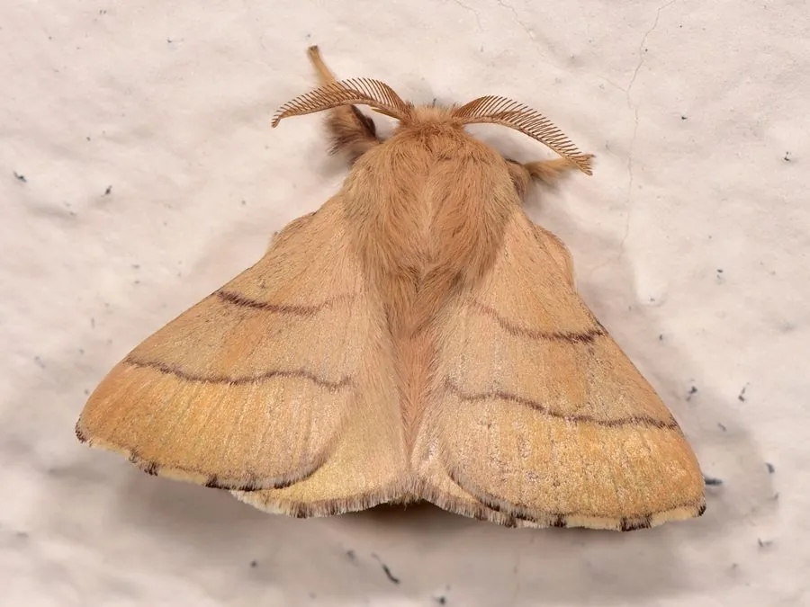

昆虫 · 动物界
天幕毛虫 Malacosoma neustria

幼虫在枝杈间吐丝结成白色天幕状网巢、群居取食的蛾类，危害苹果、梨等果树，以卵越冬。
- 分类
- 门节肢动物门纲昆虫纲目鳞翅目科枯叶蛾科属天幕毛虫属
- 栖息环境
- 苹果、梨、桃等蔷薇科果树的树冠与防护林带
- 地理分布
- 欧洲、亚洲温带，中国北方及东北果区常见
- 保护级别
- 常见果树害虫，无保护需求
物种志
天幕毛虫的成虫翅展约三至四厘米，体翅黄褐色至棕褐色，前翅有两条深色横带，雄蛾翅色较深、触角羽状，雌蛾体型粗壮、色泽较浅。幼虫黑色，背部有一条白色纵纹和橙红色斑点，体表生有细毛。初孵幼虫群集在枝杈间吐丝结网，织成一个白色的天幕状巢，白天躲在网内，夜间爬出取食。
它分布于欧洲和亚洲温带地区，中国北方果区常见，栖息在苹果、梨、桃、山楂等蔷薇科果树的树冠和防护林带。幼虫取食嫩芽和叶片，严重时把整枝叶片吃光，影响果树坐果。它以卵块环绕在细枝上越冬，卵块形似一枚深灰色的戒指，翌年春季孵化，幼虫老熟后在卷叶中化蛹，一年发生一代。防治上常在冬季剪除卵块，或在幼虫群集期摘除网巢。
形态与习性
- 翅展约三至四厘米，黄褐至棕褐色
- 网巢幼虫在枝杈间吐丝结成白色天幕状巢
- 卵块环绕细枝，形似深灰色戒指
- 食性取食苹果、梨、桃等蔷薇科叶片
- 习性白天躲网内，夜间出巢取食
- 防治冬季剪除卵块，幼虫期摘除网巢
趣味知识
- 它的卵块一圈圈绕在枝条上，像谁给树枝戴了一枚灰色的戒指。
- 幼虫白天挤在丝网里避热，夜里才排队爬出来啃叶子。
- 冬季剪掉带卵块的枝条，是最省事的防治办法。